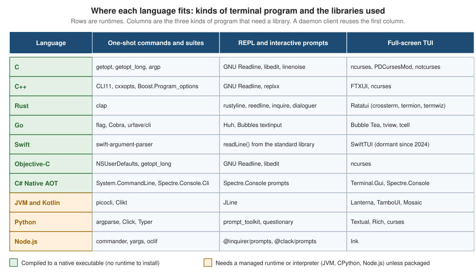

The CLI Landscape & Choosing a Stack
|
This content was generated with the assistance of AI and should be verified against the official documentation before being relied on in production. |
Before writing the first line of a command-line tool, two decisions shape everything that follows: what kind of terminal program it is, and which language and runtime it is built on. This page makes both decisions explicit. It describes the five kinds of terminal program, compares native and managed runtimes on the properties that matter for a tool people run from a shell, gives a decision matrix per audience (developers, system administrators and end users on Windows), a decision flow, and a map from every option to the page of this site that documents it.
The page was written on 25 October 2026 against these versions: Rust with Ratatui 0.30.2 and clap 4.6.7, Go 1.27.3 with Bubble Tea v2.1.0 and Cobra v1.10.2, Swift 6.4.1 with swift-argument-parser 1.8.2, .NET 10 (10.0.13) with System.CommandLine 2.0 and Terminal.Gui v2.5.0, Python 3.15.1 with Textual 8.2.8, Node.js 24 with Ink 8.0.0, JLine 4.4.8 and ncurses 6.6. The platforms are Windows 10 and 11, macOS and Linux. Section-wide versions are collected in the section landing page.
Every example in this section uses the Bookshelf scenario: a shelf tool with the subcommands shelf list,
shelf add, shelf loan and shelf return, an interactive shelf repl, a full-screen shelf tui, and a background
shelfd daemon that shelf can talk to.
Five kinds of terminal program
The word "CLI" covers programs that differ a lot in what they demand from the terminal. The kind of program you build, more than the language, decides which libraries you need and which platform problems you will meet.
| Kind | Bookshelf example | What it needs from the terminal | Typical building blocks |
|---|---|---|---|
One-shot command |
|
Arguments, standard streams, an exit status. Only checks whether stdout is a terminal to decide on colour. |
An argument parser, nothing else. |
Command suite with subcommands |
|
The same as a one-shot command, plus help, usage errors and shell completion for a tree of commands. |
An argument parser with subcommands (clap, Cobra, swift-argument-parser, System.CommandLine, picocli). |
REPL or interactive shell |
|
Line editing, history, completion and prompts. Reads from a terminal in a mode where keys are delivered as they are typed. |
A line editor (GNU Readline, rustyline, prompt_toolkit, JLine) or a prompt library. |
Full-screen TUI |
|
Raw mode, the alternate screen, cursor addressing, mouse and resize events, guaranteed restoration of the terminal on exit. |
A TUI library (Ratatui, Bubble Tea, Textual, Terminal.Gui, ncurses, FTXUI, Ink). |
Client of a daemon |
|
A thin command that connects to a long-running process, prints the answer and exits; the daemon has its own lifecycle. |
The one-shot building blocks, plus local IPC and a service definition. |
The kinds are nested rather than exclusive. A tool such as shelf is usually a command suite whose repl and tui
subcommands switch to a more demanding mode, and whose commands can run against shelfd. What changes between the
kinds is how much of the terminal you take over:
-
A one-shot command or suite takes over nothing. It reads arguments and standard streams, so it works unchanged under a pipe, a script, a CI job or an AI agent. The design rules for such tools, the stream and exit-code conventions and the rules for colour and interactivity are covered in CLI Design Fundamentals, Streams & Exit Codes and TTY, Colour & Interactivity, and are not repeated here.
-
A REPL changes the terminal from line-at-a-time to key-at-a-time input. See Interactive Prompts & Line Editing.
-
A full-screen TUI takes over the whole screen and must put the terminal back on every exit path. See TUI Architecture & Concepts and, for the argument that a TUI should be a view over a tool that also works without one, TUIs vs. CLIs.
-
A daemon client splits the program in two. See Long-Running Processes & Services.
The terminal mechanics underneath all five kinds (the TTY, the pseudo-terminal and the line discipline) are explained in Terminals, TTYs & Pseudo-Terminals.
The landscape at a glance
The figure below lays out the languages covered by this section against the three kinds of program that need a library. The first column also serves a daemon client. A green row is a language that compiles to a native executable; an amber row needs a managed runtime or interpreter on the machine unless the program is packaged with it.

The libraries in the figure are the ones this section documents. Other libraries exist for every language; the selection favours those with current official documentation. Two rows deserve a comment before the comparison:
-
Swift has a strong argument-parser story and the weakest full-screen TUI story of the native languages: the TUI library listed is dormant (no activity since 2024), so a Swift TUI normally means calling ncurses through C interop or writing escape sequences directly.
-
Python, Node.js and the JVM have the richest high-level libraries, because a managed runtime makes it cheap to build large frameworks. Their cost is paid at distribution time, not at coding time.
Native versus managed runtimes
A native program is compiled ahead of time to machine code and runs as its own executable: C, C++, Rust, Go, Swift,
Objective-C, .NET with Native AOT and Java through GraalVM Native Image. A managed program runs on a runtime that
must be present: the JVM, the .NET runtime for framework-dependent applications, CPython and Node.js. The boundary is
blurry in practice, because managed languages can be packaged with their runtime (PyInstaller and Nuitka for Python,
Node.js single executable applications, dotnet publish with a self-contained deployment, jlink and jpackage for
Java), and native languages can still depend on shared libraries.
Comparison on the properties that matter for a CLI
The official documentation of these languages does not publish comparable measurements of startup time or binary size, because the numbers depend on the program, the platform, the linking mode and the machine. The table therefore states direction and mechanism rather than figures, and a later section shows how to measure the real cost for your own tool.
| Runtime | Startup and size | Cross-compilation | Windows support | TUI library maturity |
|---|---|---|---|---|
C and C++ |
No runtime to start. Executables are small unless statically linked against large libraries. |
Needs a cross toolchain (a clang or Zig based one, or a native build per OS). No built-in |
Native on Windows with MSVC. POSIX-only libraries such as ncurses need a replacement there (PDCursesMod) or a different library (FTXUI). |
ncurses 6.6 is mature and the reference for terminal capability handling. FTXUI v7.0.3 is active. PDCurses 3.9 is dormant, PDCursesMod v4.5.4 is active. |
Rust |
No runtime or garbage collector. Executables are self-contained apart from the system C library and grow with dependencies. |
The compiler can target other platforms once the target’s standard library is installed with |
First-class. crossterm supports Windows; termion does not. |
Ratatui 0.30.2 is the standard, with a large ecosystem. It has no 1.0 release, so each 0.x release can break the API. |
Go |
No separate runtime to install; the runtime is linked into the executable, which is therefore larger than a comparable C program. |
Built in: set |
First-class for plain programs. |
Bubble Tea v2.1.0 (v2 is generally available since 2026-02-24) with Bubbles, Lip Gloss and Huh. tview v0.42.0 and tcell v3.6.0 are the alternative. |
Swift |
Native executables. On Linux the Swift runtime libraries are needed unless the Static Linux SDK is used. |
Through Swift SDKs. The Static Linux SDK produces statically linked Linux executables (musl) from another host. |
A Swift toolchain for Windows is available from swift.org. |
The weakest of the native options: SwiftTUI is dormant. |
Objective-C |
Native, very small startup cost. Foundation is part of the OS on Apple platforms. |
Apple platforms natively, other platforms through GNUstep. |
Only through GNUstep. |
Uses the C libraries (ncurses). |
.NET with Native AOT |
Native executable that starts quickly and needs no runtime. Trimming limits reflection. |
Per runtime identifier, and the target operating system must be the build operating system. There is no cross-OS Native AOT. |
First-class, Windows being the home platform of the framework. |
Terminal.Gui v2.5.0 (v2 is generally available since 2026-04-28) and Spectre.Console 0.57.2. |
GraalVM Native Image (Java, Kotlin) |
Native executable with fast startup, built with a long build step and configuration for reflection. |
Build on each target operating system. |
Supported. |
Same libraries as the JVM (JLine, Lanterna, TamboUI), subject to native-image compatibility. |
JVM and Kotlin (managed) |
Needs a JVM; the JVM adds startup cost that matters for a command run many times. |
Bytecode is portable. Per-OS images with |
Supported; JLine 4.4.8 needs Java 11. |
JLine, Lanterna 3.1.5, TamboUI 0.6.0 and Mosaic 0.18.0 for Kotlin. |
Python (managed) |
Needs an interpreter; start-up includes importing the dependencies. PyInstaller 6.22.3 and Nuitka 4.3.1 bundle it. |
Source is portable. Bundlers must run on each target OS. |
Supported. The standard |
Textual 8.2.8 and Rich 15.0.0 are mature and popular. prompt_toolkit 3.0.53 for line editing. |
Node.js (managed) |
Needs Node.js; start-up includes module loading. Single executable applications embed the runtime. |
Source is portable. A single executable must be built per OS. |
Supported. |
Ink 8.0.0 (React 19.3 or later, Node.js 22 or later). blessed and neo-blessed are abandoned. |
Three observations follow from the table.
-
Cross-compilation is where the languages differ most. Go and, to a good extent, Rust let one machine produce executables for every OS you ship to. Native AOT and GraalVM need one build machine per target operating system, which in practice means a CI matrix over
ubuntu-latest,macos-latestandwindows-latest. The recipes are in Native Binaries & Cross-Compilation. -
The TUI library decides the language, not the other way round. If the product is a full-screen tool, compare the libraries first. Ratatui, Bubble Tea, Textual and Terminal.Gui are all actively maintained, and each ties you to its language. For a command suite, nearly any language is adequate.
-
A managed runtime moves cost to the user. The tool is easy to write and the end user must install a runtime, or you must bundle one, which turns the executable into a large file and moves the problem to packaging (Native Packages & Installers).
Measuring the cost for your own tool
Because no official source gives general numbers, measure. hyperfine runs a command repeatedly after a warm-up and
reports mean and spread, and -N runs the command without an intermediate shell so that short commands are not
dominated by shell start-up.
# Compare the start-up of the same `shelf --version` built in three stacks.
hyperfine --warmup 5 -N \
'./target/release/shelf --version' \
'./shelf-go --version' \
'python3 shelf.py --version'
# Binary size on disk (macOS and Linux).
ls -l ./target/release/shelf ./shelf-goSource: hyperfine — README
The commands above were not run while this page was written, and the file names are placeholders for the binaries you built. Measure on the platforms you ship to, with a warm file cache and a cold one, because the first run after a download is what a new user experiences.
Cross-compiling the same tool from one machine
The following commands build the Bookshelf shelf executable for other targets from a single development machine. They
show how different the mechanisms are; they are a sketch of each toolchain’s documented switch, not a complete release
pipeline.
# Go: the target is two environment variables. Disable cgo to avoid needing a C toolchain.
CGO_ENABLED=0 GOOS=windows GOARCH=arm64 go build -o dist/shelf.exe ./cmd/shelf
# Rust: install the target's standard library, then build for it.
rustup target add x86_64-unknown-linux-musl
cargo build --release --target x86_64-unknown-linux-musl
# Swift: with the Static Linux SDK installed, build a static Linux executable.
swift build -c release --swift-sdk x86_64-swift-linux-musl
# .NET: a self-contained executable for another RID. Native AOT must be published on the target OS.
dotnet publish -c Release -r linux-x64 --self-containedSource: Go — Installing Go from source (GOOS and GOARCH values), The rustup book — Cross-compilation, Swift — Getting Started with the Static Linux SDK, .NET — Native AOT deployment
None of these commands was run while this page was written: the toolchains for Rust, Go and .NET were not installed on the machine used, and the Swift Static Linux SDK was not installed. Linking for the musl target in Rust, for example, may additionally require a musl-capable linker on the host; the rustup book and the Rust platform support page describe which targets need one.
Decision matrix per audience
The right stack depends on who installs and runs the tool. Three audiences cover most cases. The matrix lists what each cares about and which stacks fit. It is guidance derived from the properties above, not an official recommendation.
| Audience | What they care about | Stacks that fit well | Cautions |
|---|---|---|---|
Developers |
Installing with the toolchain they already have, fast iteration, shell completion, readable errors. |
Rust ( |
A tool that needs a runtime the developer lacks. Version drift between the runtime and the tool. Do not assume Windows developers have a C toolchain. |
System administrators |
One file that runs on servers they do not control, over SSH, in minimal containers and from cron or systemd units, with no runtime to install and predictable behaviour in a minimal environment. |
Go (static with |
Dynamic linking against a newer glibc than the server has. Interactive prompts in a script. Full-screen tools over slow or unusual terminals: check |
End users on Windows |
A double-click or |
.NET (Native AOT or self-contained, packaged as MSI or MSIX, see Windows Apps — .NET Publishing Options), Rust, Go, C and C++ with the MSVC runtime linked statically. |
Unsigned executables. Libraries that assume a POSIX terminal. Argument parsing and code page differences described in Windows Console & Processes. A TUI library whose Windows backend is missing or lags. |
For end users on macOS the equivalent concerns are Apple silicon and Intel in one download (a universal binary), Gatekeeper and notarization, and a Homebrew formula. They are covered in Signing, Notarization & OS Trust and Native Packages & Installers.
Differences by operating system that affect the choice
| Concern | Windows | macOS | Linux |
|---|---|---|---|
Terminal |
Windows Terminal and the console host. Microsoft recommends virtual-terminal sequences for new development. |
Terminal.app and third-party terminals; zsh is the default shell. |
Many emulators and shells; |
Portability trap |
POSIX-only libraries and APIs (the |
Bare executables cannot be stapled after notarization, so they ship inside a package. |
glibc versus musl: the system C library decides where a dynamically linked executable runs. |
The Windows console direction is documented in the console ecosystem roadmap. The macOS notarization limit is covered in the section on signing.
A decision flow
Start with the kind of program, then narrow by audience. The flow is a starting point, not a verdict: team skills and existing code usually outweigh everything else.
The flow assumes you control the build. When you must add a command to an existing codebase, follow that codebase’s language; the extra cost of a second language runtime is nearly always larger than any difference in the table.
Pitfalls
-
Choosing on a hello-world benchmark. The start-up of an empty program says little about your tool once it parses arguments, reads configuration and loads dependencies. Measure the real tool.
-
Picking an unmaintained library. Several libraries in this ecosystem are dormant or superseded: SwiftTUI,
tui-textarea(replaced by theratatui-textareafork), blessed and neo-blessed, PDCurses 3.9 (use PDCursesMod), and kotlinx-cli, whose README marks it obsolete. Check release activity before adopting. -
Building on a pre-1.0 library without a pin. Ratatui has no 1.0 release and no published 1.0 roadmap, so pin the exact version and read the breaking-changes notes before upgrading.
-
Assuming POSIX on Windows. termion has no Windows support, and Python’s standard
cursesmodule is Unix only. Check each library’s Windows story before you commit. -
Forgetting that cgo and Native AOT change the build. Both bring back a platform-specific toolchain and remove the one-machine cross-compile story.
-
Dynamic linking against a too-new glibc. An executable built on a recent distribution can fail on an older one. Static musl builds avoid it at the cost of other trade-offs, which the native binaries page explains.
-
Piping an installer to a shell. A
curl | shinstall script for your tool trains users into a risky habit. Prefer a package channel and signed artifacts; see Native Packages & Installers.
Where each option is documented
The middle column lists the pages of this section; the right column lists pages that already existed on this site and are linked rather than repeated.
The cross-cutting pages are Cross-Platform Portability for the differences between Windows, macOS and Linux, Native Binaries & Cross-Compilation for the build recipes, and Testing Terminal Apps & TUIs for verification across the matrix.